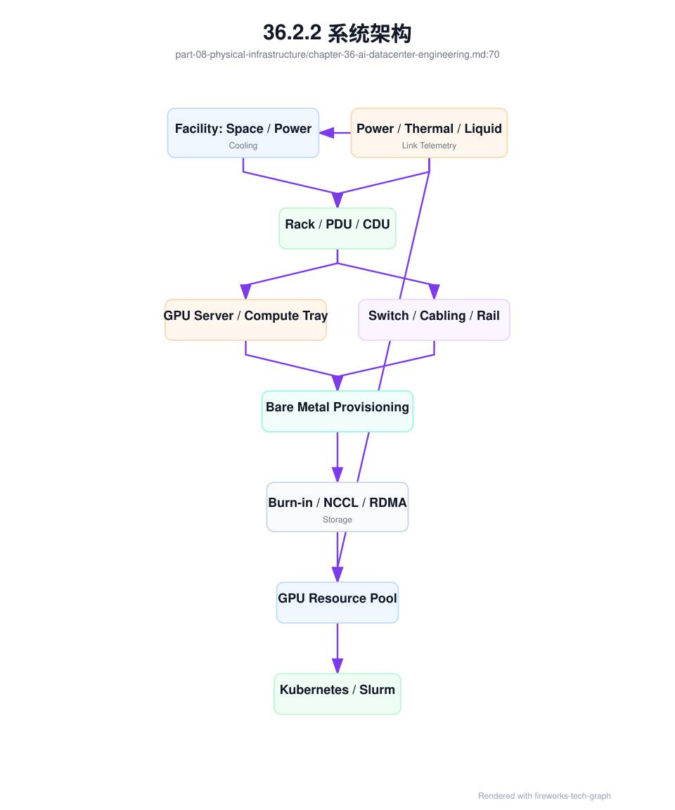
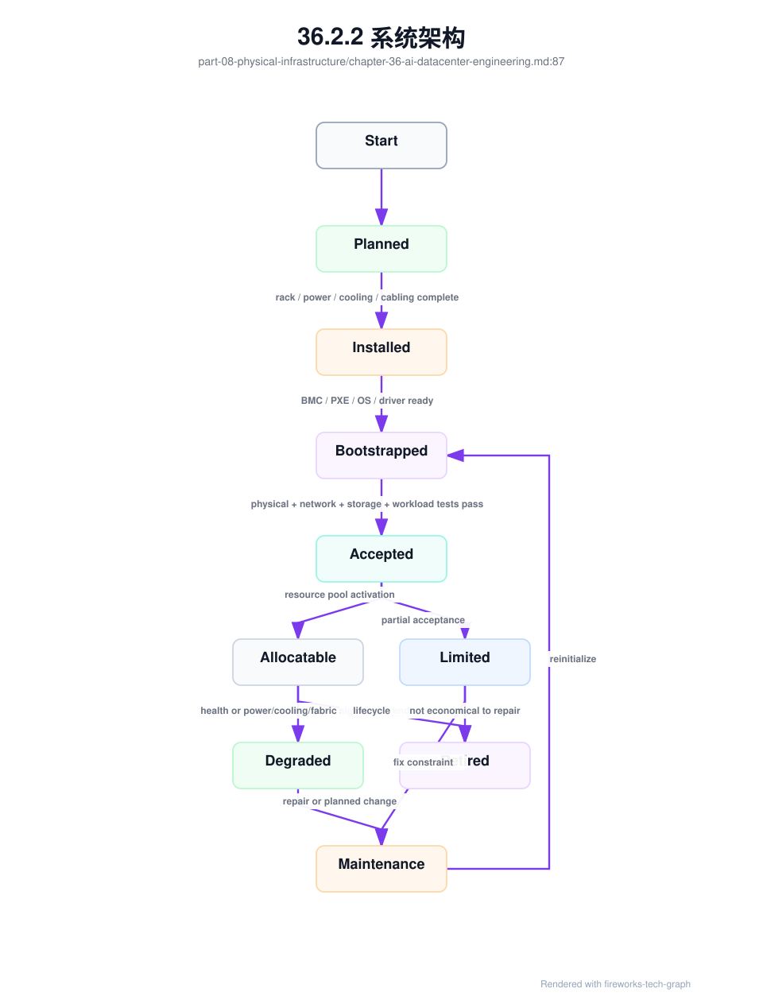
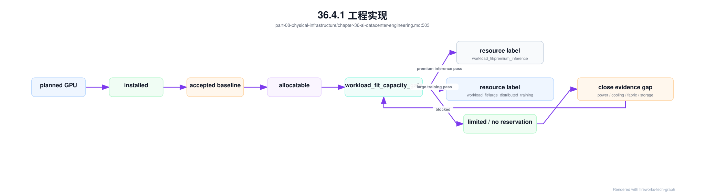

第 36 章：AI 数据中心工程¶
36.1 导读¶
36.1.1 本章回答的问题¶
- AI 数据中心为什么不是传统机房简单增加 GPU 机柜？
- Rack、power、cooling、liquid cooling、PUE、cabling、故障域、交付验收和容量扩展如何影响 AI Factory？
- 物理基础设施如何与上层调度、可靠性和经济性连接？
36.1.2 本章上下文¶
- 层级定位：本章属于
物理基础设施层，重点讨论GPU 服务器、芯片系统架构、机房、电力、制冷和交付验收。 - 前置依赖：建议先理解 第 35 章：GPU 芯片与系统架构 中的核心对象和路径。
- 后续关联：本章内容会继续连接到 第 37 章：AI Factory 可观测性，并在系统地图、深度标准和读者测试中被交叉引用。
- 读完能力：读完本章后，读者应能把《AI 数据中心工程》中的概念映射到 AI Factory 的生产路径、工程对象、观测证据和设计取舍。
36.1.3 读者测试¶
- 机制题：读者能否解释 rack、power、cooling、liquid cooling 的核心机制，以及它们如何共同支撑《AI 数据中心工程》？
- 边界题：读者能否区分 物理基础设施、GPU IaaS、资源池和 Token Factory 能效 的责任边界，并说明哪些问题不能简单归因到本章组件？
- 路径题：读者能否从 GPU 服务器和机房约束追到 rack、电力、制冷、故障域和交付验收，并指出本章对象在路径中的位置？
- 排障题：当《AI 数据中心工程》相关生产症状出现时，读者能否列出第一层证据、下一跳证据、可能 owner 和止血动作？
36.1.4 一个真实场景¶
一批高密度 GPU 机柜计划上线，训练团队已经排期压测，平台团队也准备把节点接入 Kubernetes 和 Slurm。但机房电力容量只能分批交付，液冷管路仍在调试，网络线缆标签与资产系统不一致，部分 rack 的交换机端口映射和设计图不匹配。结果节点虽然陆续能开机，却不能稳定进入生产池：有的机柜因供电限制不能满载，有的 rack 因冷却告警导致 GPU 降频，有的节点因 rail 接错导致 NCCL 性能异常。
另一个场景发生在扩容后。单节点验收全部通过，但多个训练任务同时运行时，存储网络和训练 fabric 出现拥塞，checkpoint 周期与训练通信互相干扰。设施团队认为机房交付完成，网络团队认为端口 up，平台团队认为 GPU 数量增加，业务团队却发现可用训练产能没有按装机数量增长。问题不在某一个设备，而在端到端容量没有被整体设计和验收。
AI 数据中心工程的目标，不是最快把机器点亮，而是让物理机房能力转化为可预测、可验收、可扩展的 AI Factory 产能。机房、电力、制冷、rack、线缆、网络、存储、服务器、准入、调度和 SRE 必须形成闭环。只有这样，GPU 才能从昂贵资产变成稳定生产 token 和模型的工厂设备。
这个目标要求团队改变验收语言。传统交付常问“设备是否安装完成、链路是否连通、机器是否开机”；AI Factory 还要问“能否满载运行、能否跨 rack 训练、能否稳定写 checkpoint、能否被调度系统正确理解、故障时能否定位影响范围”。后者才是生产产能。
因此，机房交付要和平台上线计划同步。若训练平台、监控、镜像仓库、存储和调度队列没有准备好，物理交付再快也无法形成可用产能。AI 数据中心工程从一开始就应纳入软件平台节奏。
36.2 基础模型¶
36.2.1 核心概念¶
AI 数据中心工程覆盖机房空间、电力、制冷、液冷、网络布线、机柜、服务器安装、BMC 管理、故障域、交付验收、容量扩展和运行监控。它位于物理基础设施层，但影响上层 GPU IaaS、资源编排、训练服务、推理服务、SRE 和 Token Factory 经济性。物理层不稳定，上层再好的调度和 runtime 都会被拖住。
传统云数据中心关注通用计算密度、虚拟化、资源池化和业务连续性。AI 数据中心还要承载更高功耗、更高热流密度、更强东西向通信、更昂贵单节点故障成本、更复杂 GPU 互联和更严格的准入验收。AI workload 的同步特性会放大局部故障：一个 rack 的网络、供电或散热问题，可能拖慢整个训练 job。
AI 数据中心的核心工程对象不是单台服务器，而是产能单元。一个产能单元可能是 rack、pod、row、GPU island、网络 fabric 或某个 power/cooling domain。平台要知道这些单元的状态：可用、受限、降额、维修、扩容中或禁止调度。否则资源池登记的是理论 GPU 数，而不是可兑现产能。
经济性也从物理层开始。PUE、供电效率、液冷效率、rack 密度、故障率、维修时间、网络线缆质量和交付周期，都会影响 tokens/W、cost per token、训练 ROI 和 SLA。AI 数据中心不是背景设施，而是 AI Factory 经济模型的一部分。
因此，本章不会把机房工程写成土建或设施清单，而是关注它如何进入平台工程。Rack 要进入拓扑调度，power 要进入容量模型，cooling 要进入节点健康，cabling 要进入网络准入，故障域要进入 SRE，交付验收要决定资源池状态。物理工程只有被平台消费，才算真正完成。
这个视角能避免两个极端：只懂设施不懂 workload，会交付无法高效训练的机房；只懂平台不懂设施，会把物理约束当成偶发故障。AI Factory 需要跨层语言，把机房事实翻译成资源和 SLA。
36.2.2 系统架构¶
AI 数据中心架构可以从设施到资源池逐层理解。Facility 层提供空间、电力、制冷、消防、安防和运维通道；rack 层承载 GPU 服务器、switch、PDU、CDU 或液冷组件；网络与存储层提供训练 fabric、推理入口、管理网、BMC 网和存储路径；裸金属交付层完成 BMC、PXE、OS、driver、firmware 和初始化；准入层运行 burn-in、NCCL、RDMA、存储和真实 workload 压测；资源池再把通过验收的节点交给调度系统。
这条链路中的任何一环不稳定，都不应进入生产资源池。电力未满载验收的 rack，不能按满配 GPU 售卖；液冷告警的节点，不能承载长时间高功耗训练；线缆映射未验证的 rail，不能进入高优训练 fabric；未完成 NCCL 和存储并发验收的批次，不能只凭单机测试上线。架构的核心是把物理状态上送到平台状态。
AI 数据中心还需要闭环 telemetry。电力、温度、液冷供回水、流量、漏液、风扇、BMC、PDU、端口、链路、rack、server、GPU 和 job 指标要能关联。SRE 排查一次训练变慢时，应能看到是否同一时间出现 rack 温度升高、电力告警、端口错误或存储拥塞。没有跨层 telemetry，物理问题会伪装成模型或平台问题。
架构上还要定义状态流转。资源从 planned 到 installed，到 bootstrapped，到 accepted，到 allocatable，再到 degraded、maintenance 或 retired，每个状态都应有证据和责任人。没有状态机，扩容会变成一堆临时表格；有了状态机，平台可以明确哪些资源能卖、哪些只能测试、哪些必须维修。
状态流转还要有门禁。比如 cabling 未验证不能进入 fabric 池，液冷未满载验收不能进入高优训练池，存储并发失败不能承载 checkpoint 密集任务。门禁把工程事实变成自动化规则，减少人工口头协调。

物理产能激活可以进一步表示为状态机：

状态机的价值在于防止“半成品产能”进入生产承诺。Installed 只说明设备放好了，Bootstrapped 只说明软件能启动，Accepted 才说明关键路径通过验收，Allocatable 才说明调度器可使用。任何 power、cooling、fabric 或 storage 限制，都应落到 Limited 或 Degraded，而不是靠人记住。
36.3 关键技术¶
36.3.1 rack¶
Rack 是机柜，也是 AI Factory 重要的容量、拓扑和故障域单位。一个 rack 通常包含 GPU 服务器、compute tray、交换机、PDU、电源线、网络线缆、管理网、冷却部件和可能的 CDU。高密度 GPU rack 的功耗和散热要求远高于普通服务器 rack，因此 rack 不能只被视为物理摆放单位。
调度上，rack 信息具有双重作用。训练任务为了降低通信成本，可能希望节点尽量位于同 rack 或相邻 rack；高可用推理服务为了避免单点故障，可能希望 replica 跨 rack 分散。批量推理、数据处理和评测任务则可能更关注成本和可用碎片。平台必须让 workload 类型决定 rack 策略，而不是全局固定。
资产系统应记录 rack 位置、U 位、供电路径、PDU、冷却域、交换机、服务器槽位、BMC、线缆、rail、故障状态和容量限制。没有准确 rack 信息，就无法建立拓扑调度、故障域分析和容量规划。很多 AI 集群排障困难，不是因为没有监控，而是因为监控指标无法映射到真实 rack 和线缆。
Rack 级运营还要关注碎片和降额。某个 rack 可能还有空闲 GPU，但电力不足、冷却异常、上联端口不足或 rail 缺失，使其不能承载高优训练。资源池应表达 rack 的可用等级，而不是只统计里面有多少 GPU。Rack 是产能单元，不是设备货架。
Rack 还适合作为容量复盘单位。一次训练变慢、一次推理故障或一次扩容失败，都应能按 rack 聚合影响：哪些 rack 的 GPU 小时损失最多，哪些 rack 的温度更高，哪些 rack 的线缆错误更多。长期看，rack 级数据能指导下一轮机房设计和供应商改进，而不仅是现场排障。
Rack 标签还应贯穿日志、指标和成本。只有这样，平台才能知道某个 rack 贡献了多少有效产能，又消耗了多少维修和能耗成本。
AI Factory 应把 rack 建模为 rack_capacity_unit。它不是“一个机柜里有多少 GPU”，而是一个由电力、制冷、网络、存储、服务器画像和准入结果共同决定的可承诺产能单元：
rack_capacity_unit:
rcu_id: dc-a-rack-12
physical_scope:
rack: rack-12
row: row-b
room: room-3
capacity:
gpu_count_installed: recorded
gpu_count_allocatable: calculated
full_nvlink_domains: recorded
training_fabric_ready: true
storage_path_ready: true
constraints:
power_envelope: power-thermal-rack12-a
cooling_domain: cdu-loop-2
pdu_capacity_margin: measured
cabling_state: verified
workload_fit:
large_distributed_training: allowed
premium_inference_spread: allowed_with_anti_affinity
checkpoint_heavy_training: limited_if_storage_concurrent_limited
economics:
rack_power: measured
effective_gpu_hours: calculated
tokens_per_watt: calculated_if_inference
capacity_loss_reason: none_or_recorded
这个对象让容量讨论从“买了多少 GPU”变成“激活了多少可用产能”。一个 rack 可能服务器都安装完成，但因为 cooling_limited 或 fabric_limited 只能进入低优池；另一个 rack 可能 GPU 数少一些，但 power、cooling、fabric、storage 全部通过，能承载高优训练。容量运营必须使用 gpu_count_allocatable 和 workload fit，而不是采购清单。
Rack capacity 还需要表达运行中降额。rack_capacity_unit 是容量单元，capacity_derating_record 是容量单元在某个时间窗口的能力折扣。两者结合后，调度器可以知道一个 rack “平时适合大训练，但当前只能跑低优批处理”；容量运营也可以把降额 GPU 数、降额时长和业务影响纳入复盘。没有降额对象，资源池只能在 allocatable 和 maintenance 之间二选一，既不准确，也不利于利用剩余安全产能。
36.3.2 power¶
Power 是 AI 数据中心最关键的约束之一。GPU 服务器功耗高，训练任务可能长期满载，推理服务也可能在高并发时产生明显峰值。电力路径从变电、UPS、配电、母线、PDU、power shelf、PSU 到服务器内部，每一层都有容量、冗余、故障域和维护边界。任何一层不足，都会让装机 GPU 变成不可满载产能。
容量规划不能只看物理空间和采购数量。一个 rack 能放下多少服务器，不代表电力允许多少 GPU 同时满载；一个机房标称容量充足，也不代表某个 row、PDU 或 power domain 没有局部约束。AI Factory 应把 power domain 写入资源池，让调度知道哪些节点共享电力风险，哪些 rack 处于降额运行。
电力问题在上层常表现为 GPU 降频、节点重启、PSU 告警、BMC power event、机柜批量异常或训练中断。业务看到的是吞吐下降或任务失败，根因可能在电力冗余丢失或峰值超过策略。SRE 必须把 power telemetry 与 job 时间线关联，否则电力问题会被误判为 GPU 或 runtime 问题。
经济性上，电力直接影响 tokens/W、joules/token 和 cost per token。不同 workload 的功耗曲线不同：预训练长期高功耗，在线推理随流量波动，批量推理可能集中在低价时段运行。成熟平台应逐步引入 power-aware scheduling 和能耗归因，把电力从设施成本变成可优化变量。
Power 还影响可靠性策略。冗余越强，故障时越安全，但可用于 IT 负载的电力预算可能越少；追求更高密度，可能需要接受更严格的降额和调度控制。AI Factory 不应把这些策略藏在设施层，而应把它们转化为资源等级和 SLA。用户买到的不是抽象 GPU，而是带电力保障的生产能力。
36.3.3 cooling¶
Cooling 是制冷能力，决定高密度 GPU 能否长时间稳定运行。GPU 服务器的热流密度高，冷却不足会导致 GPU 降频、温度告警、风扇高转、硬件错误甚至停机。同型号 GPU 在不同 rack 表现不同，常常不是芯片差异，而是进风温度、风道、液冷状态或局部热环境不同。
风冷系统关注冷热通道、风道组织、机柜布局、挡板、风扇、温湿度和回风路径。高密度 GPU 系统可能超出传统风冷能力，需要液冷或混合冷却。无论采用哪种方案，冷却都必须在真实 workload 下验收。空载温度正常，不代表训练满载或多任务混部时不会触发降频。
平台需要把热风险转化为调度状态。处于热告警、冷却降额或风扇异常的节点，不应继续接收长时间满载训练任务；某个 cooling domain 异常时，应限制新任务进入相关 rack，并考虑迁移在线推理副本。冷却状态若只停留在设施看板，上层调度就会继续制造风险。
观测指标包括进风温度、出风温度、GPU temperature、hotspot、fan speed、throttle reason、冷却告警、rack 热分布和任务功耗。冷却问题的诊断需要时间线：温度什么时候升高，是否对应训练开始、推理高峰、液冷流量变化或机房环境变化。AI 数据中心需要热力学证据链，而不是只看当前温度。
Cooling 设计还要考虑运维动作。更换风扇、调整挡板、清理过滤、维修 CDU 或改变 rack 布局，都可能影响热环境。每次变更后，应比较同一组 workload 的温度和降频基线。冷却系统不是一次设计完成后不再变化的背景设施，而是持续影响 GPU 产能的运行系统。
冷却指标也要有季节和负载背景。同一温度在不同外部环境和不同 workload 下含义不同，基线需要随时间校准。
冷却异常应落成 cooling_degradation_record。它比普通告警更结构化，记录退化发生在哪个 cooling domain、影响哪些 rack 和 workload、是否触发 GPU 降频、是否需要降额、恢复后需要哪些复测。这样 SRE 不必从设施告警、BMC 事件、GPU 温度和任务指标中手工拼现场。
cooling_degradation_record:
degradation_id: cool-deg-20260620-002
scope:
cooling_domain: cdu-loop-2
affected_rack_capacity_units: [dc-a-rack-12]
affected_nodes: recorded
signals:
coolant_supply_temperature: measured
coolant_return_temperature: measured
coolant_flow: below_policy
leak_alarm: false
gpu_thermal_throttle_events: measured
fan_speed_or_pump_state: measured
workload_impact:
affected_jobs: [optional]
affected_endpoints: [optional]
tokens_per_watt_delta: calculated_if_inference
step_time_delta: calculated_if_training
action:
capacity_derating_record: derate-rack12-20260620-001
drain_policy: long_running_training
notification: capacity_and_sre
recovery:
facility_fix_record: required
thermal_full_load_soak: required
baseline_invalidation_record: created_if_threshold_crossed
这个记录能把冷却问题从“设施层异常”翻译成 AI Factory 语言。若 GPU 没有明显报错但 tokens/W 下降，cooling_degradation_record 可以证明能效退化与冷却域相关；若 step time 抖动集中在某个 rack，它可以把排查路径从 NCCL 或模型转向热退化；若告警恢复但未完成 full-load soak，资源池仍应保持 limited，而不是立即恢复大训练调度。
36.3.4 liquid cooling¶
Liquid cooling 用液体带走热量，适合高密度 GPU 系统。它可能涉及 CDU、冷板、快接头、管路、供回水温度、流量、压力、漏液检测、过滤、维护安全和备件流程。液冷让更高密度和更高功耗系统成为可能，但也把机房工程与服务器运行绑定得更紧。
液冷不是简单替代风扇。它引入新的故障模式：流量不足、供水温度异常、压力波动、快接头问题、漏液告警、CDU 故障、传感器误报和维护窗口风险。某些故障影响单节点，某些故障影响整柜、整排或一个冷却回路。平台必须知道 cooling domain，否则无法判断影响范围。
上线液冷系统时，准入应覆盖满载功耗、供回水温度、流量稳定性、漏液检测、CDU 冗余、告警联动和故障演练。节点能开机不代表液冷系统生产可用。对高价值训练池，液冷异常应能触发 drain、降额、隔离或任务迁移策略。否则一次冷却异常会直接变成训练中断。
液冷还改变运维组织。设施团队、服务器团队、平台 SRE 和供应商需要共享告警、备件和操作流程。维护液冷接头或 CDU 不是普通服务器换件，必须考虑安全、停机范围、数据保护和恢复验收。AI Factory 采用液冷时，应同步升级运行手册和应急机制。
液冷状态也应对用户透明到合适程度。用户不需要理解每个阀门，但需要知道资源池是否处于 cooling_limited，长训练是否会被限制，维护窗口是否影响某个 GPU island。平台把液冷细节翻译成资源状态，可以减少不可解释的性能波动和临时停机。
液冷引入后，演练非常重要。漏液告警、流量下降和 CDU 切换都应有演练记录，否则真正故障时团队只能临场判断。
36.3.5 PUE¶
PUE 是 Power Usage Effectiveness，用于衡量数据中心总能耗与 IT 设备能耗的比例。它不是 AI 系统性能指标，但会影响 AI Factory 的长期经济性。同样的 GPU workload，如果设施能耗更高，实际电力成本和碳成本都会上升。对大规模推理服务，能源成本会持续影响毛利。
使用 PUE 时要注意边界。PUE 与机房设计、季节、气候、负载率、冷却方式和测量口径有关。一个年度平均 PUE 不能解释某个 rack、某个时间段或某类 workload 的真实能耗。经济模型应尽量使用可追溯的电力数据，把 IT power、facility overhead 和 workload 产出关联起来。
PUE 也不能替代 tokens/W。PUE 说明设施效率，tokens/W 说明 AI workload 把能耗转化为 token 的效率。一个低 PUE 机房如果 GPU 利用率低、模型服务 batch 策略差或硬件选型不匹配，cost per token 仍然可能很高。AI Factory 要同时优化设施效率和计算效率。
工程上，可以把 PUE、rack power、GPU power、tokens/s 和任务标签结合，形成更可靠的能耗归因。训练 ROI、推理毛利和容量扩展决策，都应考虑能源成本。PUE 的价值不在口号，而在帮助平台理解物理设施如何影响 token 经济性。
PUE 还要避免被误用为单一优化目标。为了降低 PUE 而牺牲硬件可用性、维修便利性或部署灵活性，可能得不偿失。AI Factory 更应该关注单位有效产出的总成本：同样电力和设施开销下，生产了多少可计费 token、完成了多少训练 step、达成了多少 SLA。PUE 是输入，不是最终答案。
实践中，PUE 适合做趋势和设施效率管理，不适合单独做 workload 计费。更细的能耗归因还需要 rack power、GPU power、任务时间、利用率和输出 token。把这些指标结合，才能把能源成本合理分摊到租户、模型和业务线。
36.3.6 cabling¶
Cabling 是线缆工程，包括网络线缆、光模块、电源线、管理网、BMC 网、存储网和液冷相关连接。AI 网络对线缆质量和拓扑一致性高度敏感。一个端口接错、rail 接反、标签错误或光模块异常，可能不会导致立即断网，却会在 NCCL、RDMA 或存储压力下表现为带宽下降、丢包、重传或长尾延迟。
线缆问题常见于扩容、维修和搬迁后。设计图、资产系统、交换机端口、服务器 NIC 和实际布线如果不一致，调度器看到的拓扑就是假的。训练任务可能被放到“理论同 rail、实际跨 rail”的节点上，导致性能不可解释。Cabling 必须纳入准入，而不是只靠人工贴标签。
工程上，应建立端到端映射：server、NIC、port、switch、rack、rail、fabric、管理网和存储网。自动校验可以通过 LLDP、交换机端口、主机接口、RDMA/NCCL 测试和资产系统比对完成。线缆或光模块更换后，应触发拓扑回归。没有这个闭环，大规模集群会随着维护逐渐产生拓扑漂移。
Cabling 还影响可维护性。线缆布局混乱会延长维修时间，增加误拔风险，也会影响风道和液冷维护。AI 数据中心的线缆工程应服务长期运营：清晰标签、规范走线、可审计映射、预留扩展和变更记录。线缆不是低价值杂项，而是高性能网络的物理事实。
线缆验收应有压力测试支撑。端口亮灯和 ping 通不能证明训练 fabric 正确，必须用 RDMA、NCCL、多 rail 和跨 rack 测试验证实际路径。维修后如果只恢复连通性，不恢复拓扑基线，集群会逐渐积累隐性性能问题。Cabling 是最容易被低估、也最容易制造长期漂移的工程环节。
线缆变更必须留痕。
36.3.7 故障域¶
故障域是一次故障可能共同影响的资源范围。AI 数据中心常见故障域包括 GPU、server、compute tray、rack、PDU、power domain、cooling domain、CDU、leaf switch、spine、rail、storage cluster、BMC network、机房区域和运维批次。AI workload 同步性强，故障域设计会直接影响训练效率和推理可用性。
训练任务通常希望通信资源靠近，以降低 latency 和提高带宽；但靠得越近，越可能落在同一故障域。在线推理服务通常希望 replica 分散，避免单 rack、单 power domain 或单 leaf 故障影响所有实例。调度系统要能表达这两类相反需求：训练偏局部性，推理偏分散性。不能用同一套默认规则处理所有 workload。
故障域信息不应只存在于机房图纸里。它要进入 Kubernetes label、Slurm topology、资源池、告警、容量系统和发布系统。SRE 处理 incident 时，需要快速回答：受影响的是哪些 rack、哪些 power domain、哪些 job、哪些模型、哪些租户。没有故障域标签，故障影响评估会依赖人工经验。
故障域还与批次有关。同一批服务器、同一批线缆、同一版 firmware、同一组交换机配置，可能共享隐性风险。交付和变更应记录 batch_id，并在故障分析中使用。AI 数据中心越大，越需要用数据结构表达故障域，而不是依赖少数人的记忆。
故障域设计还影响容量承诺。若一个租户的关键推理服务所有副本都落在同一 power domain，表面上有多副本，实际可用性并没有提高；若一个训练任务跨越过多故障域，通信可能变差。调度器应能根据 workload 目标选择“集中”或“打散”，而不是简单随机放置。
故障域也应进入发布策略。模型服务灰度发布时，如果新旧版本落在同一故障域，灰度本身无法验证故障隔离能力。
平台应维护 fault_domain_map，把物理和逻辑故障域变成可查询对象。示例：
fault_domain_map:
domain_id: dc-a/rack-12
hierarchy:
region: dc-a
room: room-3
row: row-b
rack: rack-12
shared_dependencies:
power_domain: pdu-a-12
cooling_domain: cdu-loop-2
network_domains:
leaf_pair: leaf-12-a-b
rail: [rail-0, rail-1]
storage_path: pfs-client-group-4
bmc_network: bmc-segment-7
members:
nodes: [gpu-node-001, gpu-node-002]
gpu_count: recorded
scheduling_semantics:
colocate_for: [low_latency_training]
spread_for: [premium_inference, control_plane]
avoid_if_state: [power_limited, cooling_limited, fabric_degraded]
incident_queries:
impact_lookup_keys:
- node
- switch_port
- pdu
- cdu
- delivery_batch
这张 map 的价值在事故中最明显。PDU 告警不是“设施事件”，而是会影响哪些 node、GPU、job、endpoint、tenant 和 reservation；leaf 维护不是“网络事件”，而是会影响哪些训练拓扑；某批线缆问题不是“现场问题”，而是能否继续把对应 rack 放入高优训练池。故障域 map 把物理世界翻译成调度、发布和 SRE 能消费的事实。
36.3.8 交付验收¶
交付验收把机房建设结果转化为可用资源。它不仅包括服务器能开机，还包括电力、制冷、BMC、管理网、业务网、训练 fabric、存储路径、OS、driver、CUDA、NCCL、RDMA、GPU burn-in、nvbandwidth、storage benchmark 和真实 workload 压测。验收范围必须覆盖从物理到模型运行的关键路径。
验收要按批次记录。不同批次的服务器、GPU、NIC、线缆、交换机、driver、firmware、液冷状态和机房区域可能不同。没有 batch 维度，后续出现性能异常时很难关联到某次交付或某个供应链批次。每个 batch 应有准入报告、失败清单、维修记录、复测结果和回池时间。
验收通过前，资源不应进入生产池。可以进入 quarantine、staging 或 burn-in 池，但不能对用户承诺 SLA。验收失败也不是简单标记坏节点，而要区分硬件故障、布线错误、配置漂移、冷却限制、网络基线不达标和软件兼容问题。不同失败类型对应不同责任团队和复测流程。
好的验收还要包含真实并发。单节点 GPU burn-in 通过，不代表跨 rack NCCL 通过；单任务 NCCL 通过，不代表多任务混部不拥塞；单客户端存储吞吐通过，不代表 checkpoint 并发通过。AI Factory 的交付验收必须从“设备可用”升级为“workload 可用”。
验收结果也应决定资源等级。完全通过的批次进入高优生产池；部分通过但网络或冷却受限的批次可以进入低优或实验池；关键项失败的资源应留在隔离区。这样既不浪费可用资源，也不会把风险伪装成正常产能。验收不是单一通过/失败，而是资源分级依据。
验收报告应可追溯到每台服务器、每个 rack 和每次测试。没有可追溯报告，后续故障无法证明是新问题还是交付遗留问题。
36.3.9 容量扩展¶
容量扩展不是简单增加 GPU。它涉及机房电力、制冷、rack、网络端口、光模块、存储吞吐、对象存储请求量、镜像仓库、BMC 地址、IPAM、PXE、驱动版本、调度队列、监控容量、日志容量、SRE 人力和成本模型。任何一个环节不足，都会让新增 GPU 变成新的瓶颈。
扩容应采用分阶段交付。先做容量设计和故障域规划，再资产入库和物理安装，再 BMC 与管理网连通，再 OS、driver 和 firmware 初始化，再网络和存储验收，再 GPU burn-in、NCCL、RDMA、存储和 workload 压测，最后进入资源池。每一步都要可追踪、可回滚、可复测。跳过步骤会把交付风险推到生产。
扩容还会改变系统行为。更多训练任务会增加 east-west 通信和 checkpoint 峰值；更多推理副本会增加模型权重拉取和入口流量；更多节点会增加监控、日志、镜像分发和维修压力。容量规划必须端到端看，而不是只看 GPU 数量。一个系统的瓶颈会随着规模变化而迁移。
成熟的扩容应包含经济评估。新增 GPU 的折旧、电力、制冷、网络、存储、运维和利用率共同决定 ROI。若业务需求主要是在线推理，扩容策略应关注 tokens/s、tokens/W、冷启动和模型发布；若需求是训练，策略应关注大作业排队、网络拓扑和 checkpoint。不同产能目标对应不同扩容方式。
扩容后还要做容量复盘。新增 GPU 是否降低了排队时间，是否提高了线上吞吐，是否引入新的网络或存储瓶颈，是否造成运维告警增加，是否达到预期 cost per token，都需要数据验证。没有复盘，下一轮扩容会重复上一轮假设，规模越大，代价越高。
复盘结果应反向更新容量模型。实际利用率、故障率、交付周期和瓶颈迁移，都比最初规划更接近下一轮扩容需要的输入。
36.4 工程落地¶
36.4.1 工程实现¶
AI 数据中心工程实现的核心，是把物理交付状态变成平台可读状态。容量系统、资产系统、交付系统、准入系统、资源池和 SRE 看板应共享 batch、rack、power、cooling、network、storage、server 和 acceptance 信息。任何一批资源进入生产池，都应能追溯它的交付路径和验收结果。
一个可落地流程包括六个阶段。第一，capacity design，确认电力、制冷、网络、存储和故障域。第二，physical delivery，完成 rack、power、cooling、cabling 和 server 安装。第三，management bootstrap，确认 BMC、PXE、IPAM、资产和远程控制。第四，software bootstrap，安装 OS、driver、CUDA、NCCL、OFED 和 agent。第五，acceptance，运行 GPU、网络、存储和 workload 基线。第六，pool activation，把通过验收的资源分级进入生产池。
状态机要能表达受限资源。某批 rack 可能 power_ready 但 cooling_limited，某些节点可能 network_validated 但 storage_baseline_failed，某个 fabric 可能 available 但不适合大训练。把这些细粒度状态写入资源池，可以避免“半成品资源”被误调度。平台应允许资源以 degraded 或 limited 等级上线，但必须明确适用 workload 和风险。
delivery_batch:
batch_id: dc-a-rack-12-2026-06
facility:
power_ready: true
cooling_ready: true
cabling_verified: true
hardware:
servers_installed: 16
bmc_reachable: true
network:
fabric_validated: true
rail_mapping_checked: true
acceptance:
gpu_burn_in: pass
nccl: pass
rdma: pass
storage: pass
pool_state: ready_for_allocation
交付系统还应生成 capacity_activation_record，记录计划产能、实际激活产能和受限原因：
capacity_activation_record:
batch_id: dc-a-rack-12-2026-06
rack_capacity_unit: dc-a-rack-12
planned_capacity:
gpu_count: recorded
target_workload: [distributed_training, premium_inference]
expected_activation_date: recorded
activation_status:
state: allocatable
activated_gpu_count: calculated
limited_gpu_count: calculated
blocked_gpu_count: calculated
evidence:
gpu_server_profiles: linked
power_thermal_envelope: passed
fabric_acceptance_matrix: passed
storage_acceptance_matrix: passed
physical_acceptance_matrix: passed
deltas:
capacity_shortfall_reason: none_or_power_or_cooling_or_fabric_or_storage
expected_vs_actual_tokens_per_watt: measured_if_available
next_action:
owner: capacity-ops
due_date: policy_defined
这个记录把扩容从项目管理语言转成平台事实。业务关心何时能用，平台关心能承载哪些 workload，设施关心哪些约束未解除，财务关心投产产能和折旧开始。一个 record 同时回答这些问题，才能避免“已经交付”和“还不能跑生产”之间的口径冲突。
capacity_activation_record 还应记录从 installed 到 workload-fit 的损耗链。很多扩容争议来自口径混用：采购合同看 planned GPU，设施看 installed GPU，平台看 accepted GPU，调度看 allocatable GPU，业务真正需要的是能跑某类 workload 的 GPU。下面这个版本把损耗原因写成结构化字段，方便进入容量运营和 Token Factory 经济模型：
capacity_activation_record:
batch_id: dc-a-rack-12-2026-06
rack_capacity_unit: dc-a-rack-12
lifecycle:
planned_at: recorded
installed_at: recorded
bootstrapped_at: recorded
accepted_at: recorded
allocatable_at: recorded_if_ready
capacity_funnel:
planned_gpu: 128
installed_gpu: 128
bootstrapped_gpu: calculated
accepted_gpu: calculated
allocatable_gpu: calculated
workload_fit_gpu:
large_distributed_training: calculated
premium_inference: calculated
checkpoint_heavy_training: calculated
limiting_factors:
power_limited_gpu: calculated
cooling_limited_gpu: calculated
derated_gpu: calculated
fabric_limited_gpu: calculated
storage_limited_gpu: calculated
baseline_invalid_gpu: calculated
maintenance_gpu: calculated
evidence:
physical_acceptance_matrix: physical-rack12-20260619
fabric_acceptance_matrix: train-fabric-a-20260619
storage_acceptance_matrix: storage-training-prod-20260619
capacity_derating_records: [derate-rack12-20260620-001]
cooling_degradation_records: [cool-deg-20260620-002]
baseline_invalidation_records: recorded_if_any
economics:
capital_committed: recorded
activated_capacity_ratio: calculated
delayed_capacity_cost: calculated
这个漏斗能让扩容评审更具体。若 installed 到 accepted 损耗大，问题在交付或准入；若 accepted 到 allocatable 损耗大，问题可能在资源池、维护、健康或变更失效；若 allocatable 到 workload-fit 损耗大，问题多半是拓扑、power/cooling、fabric、storage 或租户 entitlement。不同损耗对应不同 owner，不能都归结为“GPU 没上线”。当 delayed_capacity_cost 进入第 41 章的账本，提前做准入、布线校验和液冷演练就不再是额外开销，而是降低投产延迟成本的工程手段。
容量激活还需要一个最终门禁：workload_fit_capacity_gate。capacity_activation_record 说明投产漏斗发生了什么，gate 则决定某类业务能不能使用这批产能。它的输入不是 GPU 数，而是 workload slice：例如 premium inference、long-context inference、256 GPU training、checkpoint-heavy training、distributed evaluation。每个 slice 需要的 power、cooling、fabric、storage、runtime、SRE 和成本证据不同，不能用同一条“rack ready”结论覆盖。
workload_fit_capacity_gate:
gate_id: wfcg-dc-a-rack12-20260620
capacity_activation_record: dc-a-rack-12-2026-06
rack_capacity_unit: dc-a-rack-12
workload_slices:
premium_inference:
required_capacity:
gpu_count: 64
redundancy: n_plus_one_or_policy_defined
cold_start_budget: within_slo
required_evidence:
physical_acceptance_matrix: pass
power_thermal_envelope: pass_for_inference_burst
energy_ledger_window: collected
model_artifact_distribution: pass
serving_rollback_drill: pass_if_high_sla
decision: approve_canary_or_production_or_block
large_distributed_training:
required_capacity:
gpu_count: 256
topology: same_fabric_with_complete_rails
duration: sustained_multi_day
required_evidence:
physical_acceptance_matrix: pass_for_sustained_training
thermal_full_load_soak: pass
fabric_change_acceptance_matrix: pass
training_communication_acceptance_matrix: pass
checkpoint_plus_nccl_concurrency: pass
block_if:
- open_capacity_derating_record
- open_cooling_degradation_record
- pdu_redundancy_lost
- liquid_loop_not_retested_after_maintenance
- fabric_or_storage_baseline_invalid
decision: approve_if_all_required_evidence_valid
output:
resource_pool_labels:
workload_fit/premium_inference: true_or_false
workload_fit/large_distributed_training: true_or_false
capacity_commitment:
sellable_gpu: calculated
schedulable_gpu: calculated
reservation_allowed: policy_decision
expires_at: 2026-06-27T00:00:00Z
这个 gate 让“可用产能”变成按 workload 证明的事实。一个 rack 可以通过 premium inference，但因为 thermal soak 未完成而不能通过 large distributed training；也可以通过单节点推理，却因为 fabric baseline 失效不能承载跨 rack 训练。容量系统如果只输出一个 allocatable GPU 数，会把这些差异抹平，最终让业务承诺超过真实能力。

实现还需要变更闭环。设施变更、线缆变更、交换机升级、液冷维护、PDU 维修、批量换卡和驱动升级，都应触发相应范围的复测。复测范围不必每次全量，但必须与变更影响面匹配。没有变更闭环，初次验收再严格，也会随着运行时间失效。
工程实现还要给异常资源留出处理路径。验收失败的节点进入 quarantine，部分能力不足的 rack 进入 limited，等待供应商处理的批次进入 blocked。明确状态比隐藏问题更重要，因为平台可以基于状态做调度，而不能基于口头说明做自动化。
状态命名应尽量少而清晰。planned、staging、allocatable、limited、degraded、maintenance、quarantine、retired 已足够覆盖多数流程；状态过多会让自动化难以维护。
36.4.2 常见故障¶
第一类故障是电力容量不足。GPU 高负载时节点降频、重启或触发 PSU/BMC 告警，但资源池仍按满配 GPU 调度。解决方向是把 power domain 和功耗遥测接入调度，未满载验收的 rack 不能按满产能售卖。电力限制应被产品化为资源状态，而不是生产事故后才暴露。
第二类故障是冷却异常。某个 rack 或 cooling domain 进风温度升高、液冷流量不足或 CDU 告警，导致同一组节点性能下降。业务看到的是 tokens/s 或 step time 波动。解决方向是把温度、流量、漏液和降频事件与 rack/job 绑定，并在热风险时自动 drain 或限制长任务。
第三类故障是 cabling 与资产不一致。线缆接错、rail 反接、端口标签错误或维修后未更新资产系统，导致 NCCL、RDMA 或存储路径偏离设计。解决方向是自动拓扑发现、端口映射校验和扩容/维修后的回归测试。不要把线缆一致性寄托在人工表格上。
第四类故障是验收粒度不足。单节点测试通过，生产多机架训练失败；单客户端存储测试通过，checkpoint 并发失败；小规模 RoCE 测试通过，大规模 AllReduce 出现重传。解决方向是让验收覆盖真实 workload、并发和故障域，不只覆盖设备连通性。
第五类故障是扩容后上层系统容量不足。新增 GPU 后，镜像仓库、监控、日志、对象存储请求、调度队列或 SRE 人力成为瓶颈。解决方向是端到端容量规划，把平台控制面和运维能力也纳入扩容，而不是只扩物理服务器。
第六类故障是状态不同步。设施团队已标记某 rack 受限，资源池仍继续调度；网络团队更换了线缆，资产系统未更新；维修团队回池节点，准入基线未重跑。解决方向是统一状态机和自动化门禁。很多生产事故不是没有信息，而是信息没有进入正确系统。
36.4.3 性能指标¶
设施指标包括 IT power、rack power、PDU 状态、PSU 告警、冗余状态、进风温度、出风温度、液冷供回水温度、流量、压力、漏液告警、fan speed 和 cooling domain 状态。它们要与 rack、server、job 和时间线绑定，才能解释生产性能波动。
网络与布线指标包括端口 up/down、链路速率、端口错误、光模块状态、LLDP 映射、rail 一致性、RDMA 重传、NCCL 基线和跨 rack 带宽。线缆和网络指标应进入交付验收和维修回归。只要拓扑被调度器使用，拓扑一致性就是性能指标。
交付指标包括 batch 交付周期、准入通过率、失败分类、返修率、复测次数、回池时间、degraded 资源比例和首次生产故障率。它们衡量数据中心工程是否能稳定转化为可用产能。交付速度快但生产故障高，并不是真正高效。
经济指标包括 PUE、tokens/W、GPU 有效利用率、因电力/冷却/网络导致的 GPU 小时损失、单位 rack 产能、单位电力产能和 cost per token。AI 数据中心指标最终要能回答：物理设施是否在稳定、经济地生产 token 和模型。
指标还要服务不同层级决策。值班 SRE 需要分钟级告警，容量团队需要周/月级趋势，管理层需要产能和成本，平台团队需要与 job 关联的诊断数据。统一数据源可以生成不同视图，但前提是标签一致：rack、batch、power domain、cooling domain、fabric、tenant 和 workload 必须贯穿。
指标也应支持复盘。每次扩容、事故或大规模变更后，都应比较计划产能、验收产能和实际生产产能。差距来自电力、冷却、网络、存储、平台还是业务需求预测，都要被记录。没有复盘，容量规划只会重复过去误差。
指标还要有所有者。没有 owner 的指标只会停留在看板上；有 owner 的指标才能触发维修、扩容、降级或架构调整。
36.4.4 设计取舍¶
第一个取舍是密度与可靠性。高密度部署提高单位空间产能，可能降低部分网络距离和单位机房成本，但会增加电力、散热、液冷、线缆和故障域压力。密度越高，越需要强准入、强 telemetry 和清晰隔离。否则一次 rack 级问题会损失大量昂贵 GPU 小时。
第二个取舍是交付速度与验收深度。业务希望 GPU 尽快上线，但验收不足会把风险转移到训练和推理生产。合理做法不是无限延长验收，而是分级上线：先进入 staging，跑完核心基线后进入低优池，再通过多任务和真实 workload 后进入高优生产池。不同资源等级对应不同证据。
第三个取舍是局部最优与端到端产能。设施团队可以优化机房交付，网络团队可以优化端口，平台团队可以优化调度，但 AI Factory 关心的是有效 GPU 小时、tokens/s 和 cost per token。局部指标必须服从端到端产能。扩容计划应同时评估电力、冷却、网络、存储、控制面和业务需求。
最终，AI 数据中心工程的目标不是“把机器点亮”，而是把物理资产转化为持续、可解释、可扩展的 AI 生产能力。好的数据中心工程会让上层平台知道哪些资源可用、为什么可用、能承载什么 workload、出现问题时影响哪些任务，以及扩容后真实产能增加多少。
设计取舍应以证据复盘。高密度是否值得，要看单位 rack 有效产能和故障损失；深度验收是否值得，要看生产事故减少和交付周期增加之间的平衡；细粒度故障域是否值得，要看调度质量和治理成本。AI 数据中心工程不是追求绝对完美，而是在产能、风险和成本之间持续优化。
36.5 小结与延伸阅读¶
36.5.1 小结¶
- AI 数据中心工程连接机房能力与上层 AI 产能。
- 电力、制冷、线缆和故障域会直接影响训练推理稳定性。
- 交付验收必须覆盖物理、网络、存储、驱动和真实 workload。
- 扩容要端到端评估，避免局部容量增加造成新瓶颈。